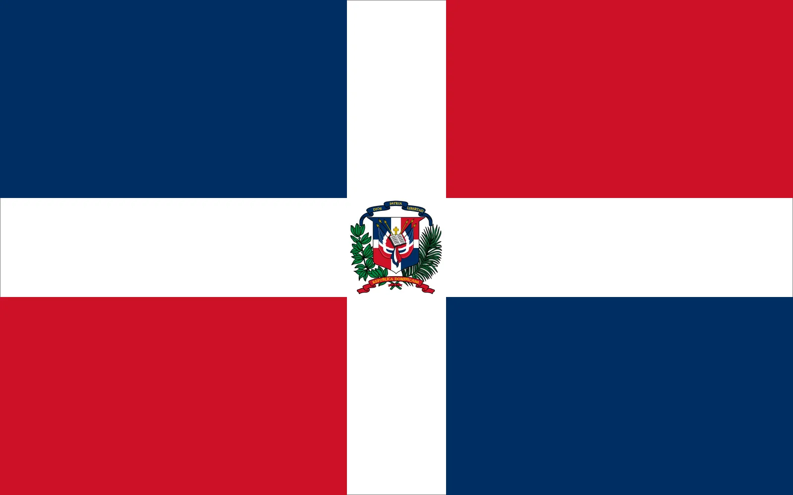
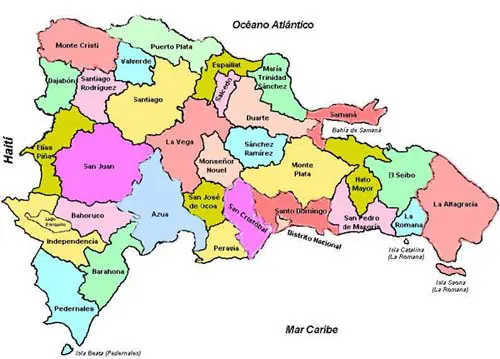

Localización en el Caribe
Se encuentra en el Mar Caribe entre las Antillas Mayores. A su oeste se encuentra Haití y al sureste se encuentra Puerto Rico.

Bandera
La Bandera consiste de tres colores: rojo, blanco y azul. Es una cruz blaca que divide a los cuadrantes rojos y azules.

Mapa de la Isla
República Dominicana se divide en 31 provincias y un distrito nacional.